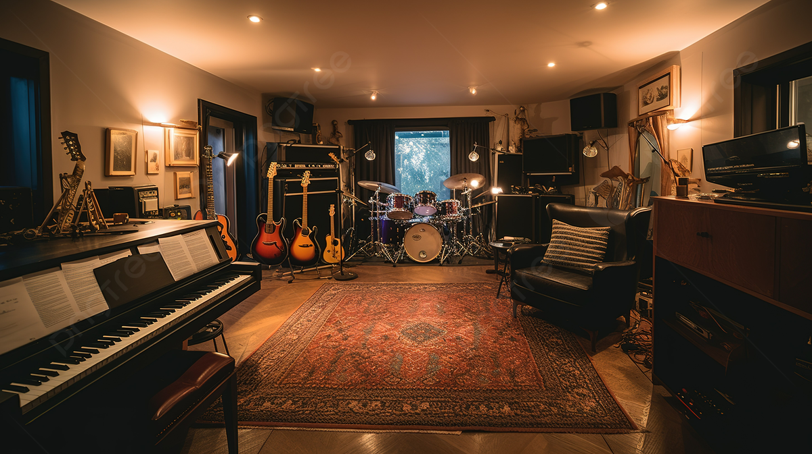

MELODIES & MEMORIES
Selling vintage instruments is a unique and rewarding venture, blending the allure of history with the passion for music. Each vintage instrument carries a story, often crafted with unparalleled craftsmanship and possessing a distinctive character that modern instruments sometimes lack. The market for these treasures is driven by collectors, and musicians who seek the timeless quality and unique sound that only a vintage piece can offer. By connecting with potential buyers through detailed descriptions, and stories of the instrument's past, sellers can evoke a sense of Nostalgia and appreciation, making the purchase of a vintage instrument a truly special experience.